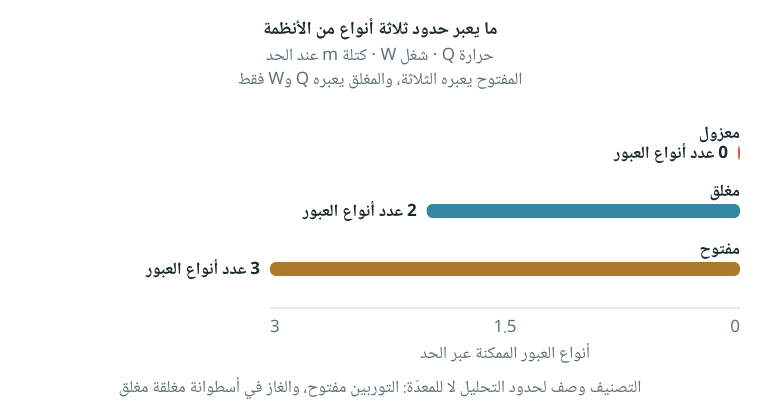

النظام المغلق والمفتوح والمعزول
النظام الديناميكي الحراري هو الجزء المختار من الكون الذي تُطبَّق عليه موازنة الطاقة، ويوصف بأنه مغلق أو مفتوح أو معزول بحسب ما يعبر حدوده: الكتلة والحرارة والشغل.
نختار الحدود، ثم نُحصي ما يعبرها. النظام المغلق لا تعبره كتلة، فتبقى الكتلة ثابتة ويصير القانون الأول Q − W = ΔU. والنظام المفتوح تعبره كتلة، فيُحسب الأثر بفرق المحتوى الحراري بين الداخل والخارج مضروبًا في معدل التدفق. توربين يدخله 10 كغ/ث بفرق محتوى حراري 500 كيلوجول/كغ يُنتج 5 ميجاواط شغلًا (بإهمال الحرارة والحركة)، أي أن المفاعل الحقيقي لا يُحسب بكتلة ساكنة. والنظام المعزول لا تعبره حرارة ولا شغل ولا كتلة، وهو حدّ نظري يُستعمل لتقدير الخطأ: الترمس ليس معزولًا تامًّا بل يفقد نسبة من حرارته في الساعة.
كيف تعمل الظاهرة؟
الطاقة لا تُستحدث ولا تُفنى، فتنتقل عبر الحدود أو تُخزَّن داخلها. عند الحد تظهر ثلاثة أنواع من العبور: شغل ميكانيكي من حركة سطح (مكبس، عمود)، وحرارة من فرق حرارة، وكتلة تحمل معها طاقتها الداخلية وحجمها وضغطها. ولذلك يتغيّر شكل القانون الأول بحسب نوع النظام: في المغلق يُعادل الشغل تغيّر الحجم، وفي المفتوح يظهر الشغل التقني (فرق المحتوى الحراري) لأن الكتلة الداخلة تدفع الخارجية، وتُضاف طاقة الحركة والوضع عند السرعات والارتفاعات المؤثرة.
العلاقة بالأرقام
النظام المفتوح المستقر: Φ = ṁ·(h₁ − h₂) + Q̇، وبأرقام: ṁ = 10 كغ/ث، h₁ − h₂ = 500 كيلوجول/كغ ⇒ Ẇ = 5.0 ميجاواط. والنظام المغلق: Q − W = m·cv·ΔT، فبتسخين 2 كغ هواء بـcv = 718 جول/(كغ·كلفن) مقدار 20 كلفن يلزم 28.7 كيلوجول. والموازنة في المفتوح تُكتب بمعدلات (واط) لا بكميات (جول)، وهذا أكثر ما يُخطئ فيه الحساب الأولي.
مفاهيم متقاربة
المغلق ليس محصورًا في وعاء مغطى: ضاغط يشفط ويطرد غازًا نظام مفتوح وإن بدا محكمًا. والمعزول ليس برودة أو خواء: العزل صفة انتقال حرارة عبر الحد، والتفريغ يقلّل التوصيل والحمل لكنه يزيد الإشعاع في بعض الحالات. ولا يُخلط النظام المفتوح مع «المفتوح على الغلاف الجوي» (ضغط ثابت): أنبوب ماء بضغط ثابت نظام مفتوح ذو حدّ مرن، والمكبس نظام مغلق متغيّر الحدود.
حدود التطبيق
كل اختيار حدود هو قرار تحليل: حرارة الغاز في أسطوانة داخل محرّك تكون مغلقة إذا حُسبت الأسطوانة، ومفتوحة إذا حُسبت الآلة كلها، وتختلف معادلات الشغل بحسب الحد ولا تتناقض. والحساب المستقر (steady) يفترض أن ما يدخل يساوي ما يخرج ومعدلات ثابتة، وهو غير صالح عند الإقلاع والإطفاء والتخزين الحراري في جدران أنبوب. والمعزول التام لا وجود له في جهاز حقيقي، فتقدير التسرب جزء من التصميم لا تفصيل ثانوي.

| الكمية | القيمة | المصدر |
|---|---|---|
| شغل توربين عند معدل تدفق 10 كغ/ث وفرق محتوى حراري 500 كيلوجول/كغ | 5.0 ميجاواط | [1] |
| حرارة تسخين 2 كغ هواء بمقدار 20 كلفن عند cv = 718 جول/(كغ·كلفن) | 28.7 كيلوجول | [2] |
| عدد أنواع العبور في النظام المعزول | صفر نوع | [3] |
| القانون الأول للنظام المغلق | Q − W = ΔU بلا وحدة | [2] |
المصادر
- 1 First law of thermodynamics — Wikipedia. en.wikipedia.org/wiki/First_law_of_thermodynamics · اطُّلع عليه 2026-11-19
- 2 Thermodynamic system — Wikipedia. en.wikipedia.org/wiki/Thermodynamic_system · اطُّلع عليه 2026-11-19
- 3 Steady Flow Energy Equation — The Engineering ToolBox. www.engineeringtoolbox.com/steady-flow-energy-equation-d_519.html · اطُّلع عليه 2026-11-19
استشهد بهذا المصطلح
الصيغتان مبنيتان من بيانات الصفحة نفسها: العنوان والتاريخ ورابط النسخة المنشورة.
النظام المغلق والمفتوح والمعزول. (2026). ديوان المعرفة — انفراد. https://infiradev.com/diwan/terms/thermodynamic-systems.html
@misc{thermodynamic-systems2026,
title = {النظام المغلق والمفتوح والمعزول},
howpublished = {{ديوان المعرفة — انفراد} — مرجع علمي عربي},
year = {2026},
url = {https://infiradev.com/diwan/terms/thermodynamic-systems.html},
urldate = {2026-11-19},
note = {مراجعة علمية: عبدالله الهويدي — مراجعة في تطبيق انفراد}
}
راجعه: عبدالله الهويدي — مراجعة في تطبيق انفراد · 2026-11-19 · آخر تحديث 2026-11-19